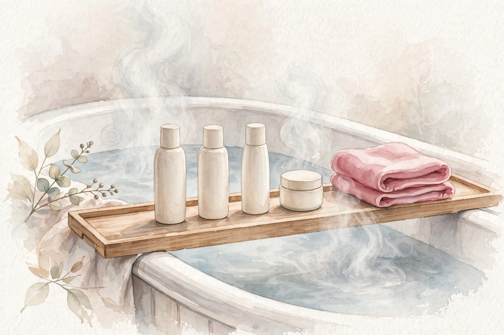
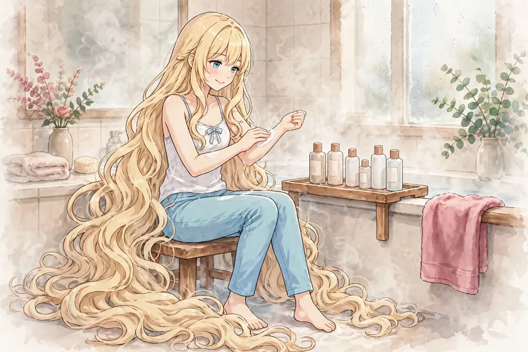

お風呂でするスキンケアの順番

入浴中にスキンケアまで済ませてしまいたい、という方は多いと思います。湯気の中で進めるケアは気持ちのよいものですが、浴室は水はねと湿気の多い場所でもあります。置き場所と順番を決めておくと、無理なく回るようになります。この記事では、お風呂でするスキンケアの手順の組み方を整理します。
順番は、入浴の流れに沿わせる
基本の流れは「洗う→湯船につかる→上がる前に仕上げ」です。洗顔は入浴の前半に済ませ、湯船の時間はそのまま過ごし、保湿系のアイテムは上がる直前に使います。浴室内の動線に沿って手順を並べると、行ったり来たりがなくなります。
シートマスクなど置く時間のあるアイテムを使う場合は、湯船の時間を当てるのが合理的です。表示の時間を目安に、湯船の中で待つ形にすると、手順が一つの流れに収まります。
置き場所は、水はねの届かない位置に
浴室にアイテムを置く場合は、水はねの届きにくい、高さのある奥の位置が無難です。容器の外側がいつも濡れていると、ラベルの文字が読みにくくなったり、蓋のまわりに水がたまったりします。使用量や使用方法の表示は、浴室でこそ読み返すことが多いので、表示が読める状態を保つことも大切です。
使う分だけを持って入る方法もあります。小さい容器に移す手間はありますが、浴室に置く点数が減り、管理は楽になります。
置きっぱなしにしない判断も、保管の一部
浴室は高温多湿の環境です。開封したアイテムを長く置きっぱなしにすると、管理の面で心配が残ります。私は、浴室に常駐させるのは毎日使う数点だけに絞り、それ以外は脱衣所に置いて、使うときだけ持って入る運用にしています。
順番、置き場所、常駐させる点数。この3つを決めると、お風呂のスキンケアは安定して回るようになります。
家族で入浴の順番が決まっている家庭では、自分の番の前後で道具の置き場所が変わることもあります。その場合は、使うアイテムを小さいカゴにまとめて、入るときに持って入り、出るときに持ち出す形にすると、置き場所の揉め事がなくなります。汗をよくかいた日や、長く湯船につかった日は、仕上げの量を軽めに調整するなど、その日の入り方で手順を少し変える柔軟さもあってよいと思います。お風呂のスキンケアは、脱衣所での手順と対になるものです。両方を一つの流れとして設計すると、平日の夜の手順全体が短く、静かに回るようになります。使うアイテムの順番は、カゴの中の並び順とそろえておくと、考えなくても手が動くようになります。浴室での手順は、脱衣所での手順の続きです。置き場所と順番を一度決めてしまえば、あとはその型を繰り返すだけになります。

セラフィナ「お風呂ケアは流れに沿わせて、置くのは水はねの届かない場所。常駐は数点だけに絞ろう」

セラフィナ｜美容の道具箱の案内役
「量と表示が分かれば、美容は失敗しない。」——セラフィナと白猫のモコが、買う前のチェックポイントを案内します。綺麗になりたい気持ちに正直に、でも表示は冷静に読むのが、このサイトの約束です。